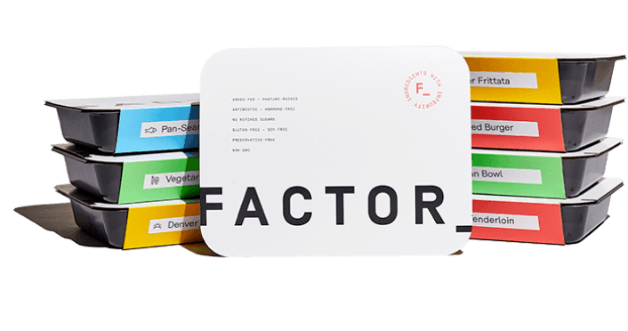

Before we even get started, let's make sure that it is clear: I am not a doctor, and I am not a mental
health
professional. I am just a guy with ADHD who has found these services helpful.
Below are some services I actually use and have helped me as i deal with the effect of ADHD. I have used all
of these services to help me manage the impact that ADHD has on my life. Some of the links are referral
links (and are marked as such). If you use my referral links, I will get a small commission. Thank you for
your support!
I am in no way affiliated with any of the services on the list, (Except of course the one at the end that I
clearly state I made myself... I'm not really getting anything back from that... I honestly don't even know
if I can see the number of visitors on that site right now...) None of these services have paid me or even
reached out to me to ask me to promote them. I am promoting them because I have used them and they have
helped me.

Factor_ is a meal delivery service. They deliver healthy, pre-made meals to your door. The meals are
both tasty, healthy and convenient. You can choose how many meals you want to receive each week, and
manually select which meals you want to receive. You have the option to skip weeks if you want, and you
can cancel at any time.
My Experience
I have personally used Factor_ to help lose over 150 pounds in just one year. How did I do it? I
took a few weeks to consume all of the food I had in my house, so I would no longer have snacks or
ingredients to create those strange midnight concoctions. Then, I signed up for Factor_ and began
eating their meals instead of my previous diet, which consisted heavily of chicken nuggets and
microwaved taquitos.
The strategy was twofold. First, don't
keep snacks or meal prep items around that could easily be turned into snacks. Second, find a source
of meals that were easier to prepare than a Hot Pocket, and cheaper than on-demand delivery services
like DoorDash or Uber Eats.
Factor_ fits the bill. While it's more expensive than cooking for myself, I found that when I tried
to cook, I would end up with delivery bills between $30 and $90 two to five times a week on top of
the cost of groceries.
With Factor_, I pay just over $200 a week for 18 meals. If you (unlike me) can keep breakfast food
around without it turning into snack food, or if you are just looking to replace a few meals a week
to have a little more time, you could pay even less.
By using the referral link you can get a total of $100 to $250 of saving throughout your first 6boxes
(depending on the number of meal you order per week), and I get $40 for my next box.
(You can even use a virtual card from Privacy.com for the subscription. 😉)
Maid Pro is a cleaning service. They will send cleaners to your house to clean it. You can
schedule a one-time cleaning, or you can schedule recurring cleanings. You can also choose how often
you want your house cleaned. You can choose to have your house cleaned weekly, bi-weekly, or
monthly.
My Experience
I have used MaidPro to help me keep my house clean. I have a tendency to hoard things.
I also have a tendency to leave things out. This combination leads to a lot of clutter. I also have
a tendency to forget to clean. This combination leads to a lot of dust and dirt.
I get my house cleaned every two weeks. This was the first part of my life that I outsourced.
I called them up to do a one-time deep cleaning after coming out of a fairly bad depression. There
was
no shaming, no judgement, just a team of people who came in and cleaned my house. It was amazing.
After that, I decided to have them come back every two weeks. It has been a huge help. I no longer
have
to worry about cleaning my house. One of the hardest things for my stupid ADHD brain to prioritize.
If you use my referral link, I we will both get a get $25 Amazon gift card.

Privacy.com is a service that allows you to create virtual credit cards. You can create a virtual credit
card for each online service you use. In this way, if one of your virtual credit cards is compromised,
you can simply delete that virtual credit card and create a new one. This is a fantastic way to protect
yourself from credit card fraud. You can also set spending limits on each virtual credit card. If you
exceed your spending limit, the virtual credit card will be declined. They can also prevent unwanted
charges from recurring subscriptions.
My Experience
I use Privacy.com to help protect my credit card information. I have a tendency to sign up for free
trials and then forget to cancel them. I also, on occasion, try my luck and buy stuff from companies
I don't completely trust.
I create a virtual credit card anytime I sign up for a free trial that requires a credit card, with
a limit that is lower than the ongoing subscription. This turns the opt-out subscription into an
opt-in subscription. Since I can increase the limit on the virtual credit card if I actually want to
keep using the service.
I'll use it for pay-as-you-go subscriptions, like OpenAI or Azure, just for peace of mind just in
case. I'll also use it anytime I'm making a purchase from an online store I don't trust. But the
real benefit for my ADHD brain is not having to remember to cancel a subscription I messed with for
a few minutes a month ago.
If you use my referral link, we will each get $5.
LawnStarter is a lawn care service. They will send lawn care professionals to your house to mow your
lawn. You can also choose how often you want your lawn mowed. I typically have it mowed weekly in the
spring then every other week in the summer and fall.
My Experience
Just one more chore I found myself neglecting. I would wait until my lawn was a foot tall before I
would
mow it. I would then have to mow it twice to get it back to a reasonable height. I would never
bother
with edging and trimming.
This one will only really help you if you have to maintain a lawn. Another option I'm looking at is
zeroscaping my yard.
If you use my referral link, you will get $15 off your first service, and I will get $5 for my next
service.
AI Proofreader is a proofreading service that uses OpenAI's GPT-3 or 4 (depending on which you have
access to via your api key) to suggest corrections to your writing.
It is still in beta, but it is free to use.
My Experience
Okay, to be transparent while this isn't a referral, it is my own site. I created the site
because I
struggle with typos and
misspellings. The goal of this is to have an AI that won't typically reword or generate material,
but
will simply correct the technical errors that are present when I type quickly.
It does occasionally suggest changing words, but if that doesn't fit the tone I'm going for, they are
easy to change back.
It is still pretty much still in beta, but I'm using it to help write this page. So far, it has been
a
huge help. It is free to use, and I'm not collecting any data from it. I'm just using it to help me
write.
(It does require that you have your own OpenAI API key. Unfortunately, OpenAI doesn't have a referral
program for me to try to milk. 😛)
I know some of these services are not available in all areas. I also understand that some of these services
are expensive. I felt really guilty using them for a while. I felt like I was playing a pay-to-win video
game, buying my way out of my problems. However, I found that often the cost of these services were often
less than the cost of the problems they solved. Where they cost more, I feel the benefit to my mental health
is worth it.
I was spending more money on food delivery and groceries than I am currently paying for Factor_.
MaidPro is definitely more expensive than cleaning my house myself, but I can only imagine how much damage
my home might receive if my hoarding tendencies were left unchecked.
The cost associated with LawnStarter only is somewhat offset by the potential cost of citations from the
city, as well as the expense of maintaining and refueling lawn equipment. Additionally, it is one of the
most dispensable items on this list and one that many people don't even need to deal with.
Privacy.com is free to use, and I would recommend it to anyone who makes online purchases.